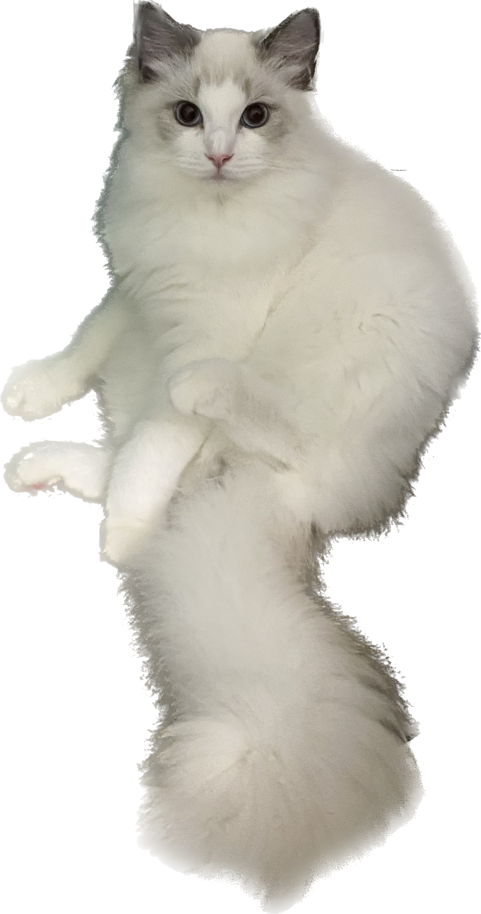

Why Catgwarts?
Founded in -1827 ( yes yes yes !! long before human even exits), the University of Catwarts is top university on earth. It has a long history of challenging the impossible and transforming society through MAGIC!
Catwarts continue to grow, thanks to the ingenuity and resolve of its faculty, students and supporters. All our graducated students are able to conquer at least one human, occupy their living space, make human's house their own!
Famous professors of Catwarts
I do favoured weird students, so what?
Buy me sweets for every class, or you fail your final exam.

We cats are born to be going anywhere we want!
I dare say all human are loveable.
News
Thirty students and sixteen academics across the cat world gathering at Catwarts to discuss the compaign next month, regarding a protest against cat sterilization brutality. All female cats deserve a chance to raise next generation!
The Catwarts Wizard World Mystery game is announcing its biggest expansion ever. N.E.W.T. exams have arrived and graduation will be here before you know it... But wait, there's much more to come and the magic never ends!
Professor Anthony won another top award for "Breaking Cat's Toys", big congrats for Professor Anthony. We try to reach Ashely(one of the closest human friend of the professor) for comment but failed. We will contiune to update if any new response from Ashely.
Professor Liuliu got into hospital due to sugar overdose, the Medical Service Center again emphasis on the importance of being cautious when taking human dishes.
Ready to fly? Catwarts: Quidditch Champions is opening limited playtesting this Sunday and you can sign up to be among the first to play. Grab your broom and gear up!
Hosted by Professor Ten Thousand, join us as we go live for the Amazing Cat Room Tour series, We'll be joined by special guest, human friend Gwen. We wil be visting their brand new apartment located in Xiamen Island. Wait and See!